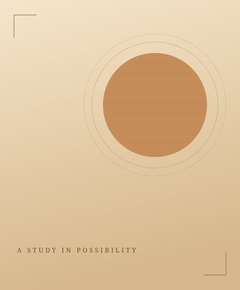
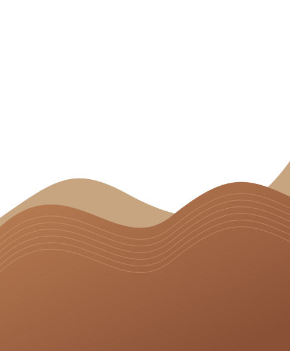
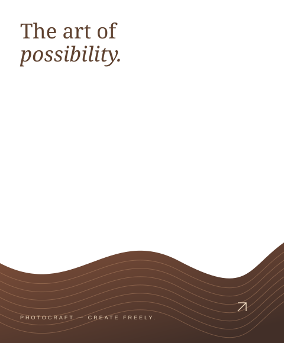
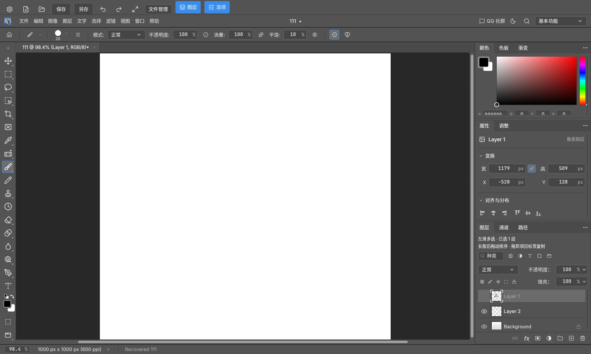

让想法，层层展开。
图层、分组、蒙版与混合模式。把复杂的画面拆解，让每一个细节都由你掌握。
图层与蒙版A little craft. Endless possibilities.
把脑海中的画面，变成手中的作品。
原生图像编辑器
PhotoCraft，让图层、画笔与想象力，
一起装进口袋。



TOOLS FOR YOUR IMAGINATION
从第一笔，到最后一个像素。
熟悉的创作工具，陪你认真对待每一次灵光乍现。
图层、分组、蒙版与混合模式。把复杂的画面拆解，让每一个细节都由你掌握。
图层与蒙版画笔、独立像素铅笔、选区与矢量工具。从细腻涂绘到像素创作，找到自己的笔触。
绘画与选区使用曲线、调整图层与常用滤镜雕琢画面。光影与色彩之间，藏着你的独特视角。
调整与滤镜YOUR EVERYDAY CREATIVE SPACE
画布之外，尽量简单。画布之内，尽情发挥。

Android 版沿用原版编辑引擎，并适配触摸操作。
双指平移、缩放与旋转画布；图层左滑多选，长按呼出更多操作。
在平板或支持的设备上连接外接键鼠，继续使用熟悉的编辑快捷键。
编辑过程在本地进行。保留 PSD 或 .pcraft 图层文档，再导出你的成品。
OPEN SOURCE. OPEN POSSIBILITIES.
PhotoCraft 的源代码开放给每一个好奇的人。
发现问题、提出想法，或写下你的第一行贡献。
原生 Rust
开放的代码
持续生长的可能
可以。PhotoCraft 源码采用 MIT 或 Apache-2.0 双重许可，Android 移植版可免费下载使用。这个网站无需登录，直接前往下载页即可获取 APK。
需要 Android 9 或更新版本，以及兼容 Vulkan / OpenGL ES 3 的 GPU。大多数 ARM64 手机和平板选择 ARM64 包；x86_64 包适用于对应架构的 Android 模拟器。复杂编辑更推荐平板或外接键鼠，实际表现取决于设备内存与 GPU。
支持 PSD / PSB 导入导出，以及图层、蒙版等工作流程，但项目仍处于早期阶段，尚不等同于完整 Photoshop 兼容。重要作品请保留原件，具体差异可查看项目的格式兼容性文档。
这是基于 storytold/photocraft 独立维护的 Android 移植版，并非上游官方 Android 发行版。当前发布为 0.14.0-android.1（14001）。已验证的核心流程来自 Android 15 x86_64 模拟器；尚未完成真实 ARM64 手机验证。
YOUR NEXT IDEA STARTS HERE
免费开源 · Android 9+ · 为创作而来